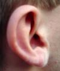

jwz-corleone.txt
 social_behavior
social_behavior called, discuss, said, called, said, speech, said, saying, please, said, say, please, ask, generous, generosity, talk, treating, tell, asked, providing, providing, told, say, thanks, say, said, spoken, speak, asking, assure
 instrumental_behavior
instrumental_behavior making, preparations, pick, trying, buy, try, found, tried, goals, spend, claimed, trying, use, money, found, collect, assembly, trying, money, money, make, spend, money, money, spend, trying, skill, component, component, worked, built, product, skill, jobs, work, money
 abstraction
abstraction planning, guess, problem, problem, problem, something, why, problem, figure, may, may, know, something, differently, know, think, understood, thought, why, fact, them, suppose, providing, quantities, them, providing, them, them, them, think, certain, certain, understand, example, sure, know, true, known, basically, them, them, them, certainly, why, understanding, fact, believe, why, think
 temporal_references
temporal_references years, when, then, while, time, everyone, time, weeks, then, years, weeks, time, when, when, now, time, hours, ever, weeks, then, again, weeks, then, time, then, once, once, former, year, times, then, instant-millionaires, then, while, when, while, often, during
 ascent
ascent throw, hanging, hang, hangers-on
 affection
affection friend, friends, friends, kind, kind, favor, loved, like, friends, favorite, friends, friendships, friendships, friendships, friends, likely, friends, like, friend, like, like, like, like, friends
 unknown
unknown incredibly, stranger, incredible
 touch
touch contact, touch
 restraint
restraint compelled, obligation, necessary
 chaos
chaos confused, random
 voyage
voyage trip, trip, travel
 general_sensation
general_sensation fair, pretty, fairly, pretty
 order
order former, simply
 sex
sex fucking
 passivity
passivity slack
 fire
fire burningman
 concreteness
concreteness along, at, at, here, where, out, back, at, long, points, at, longer, close, close, over, out, at, at, point, out, at, at, out, far, at, where, out, back, at
 aggression
aggression slaughter, kicked, hits, hit, hit, brokerage
 anality
anality pisstest, asshole
 descent
descent sink
 consciousness_alteration
consciousness_alteration fantasy, ecstasy, ecstasy, crazy
 brink-passage
brink-passage doorprize, line, door
 depth
depth deep
 sound
voicemail, sound, sound
 height
height roof, pile
 vision
vision see, see, seeing, seen, look
 glory
glory rich, rich
called, discuss, said, called, said, speech, said, saying, please, said, say, please, ask, generous, generosity, talk, treating, tell, asked, providing, providing, told, say, thanks, say, said, spoken, speak, asking, assure